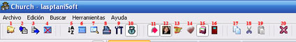

Botones
En este apartado explicaremos la función de cada botón de la Barra de Botones, por el número que hemos puesto en la figura 30:

Figura 30. La Barra de Botones.
1. Utilizado para abrir la base de datos Maestra, útil cuando haga copias de seguridad de su base de datos, cuando cambie de lugar su base de datos, cuando cambie el nombre de su base de datos, etc.
2. Importar/Exportar registros entre dos base de datos (siempre que tengan la misma estructura).
3. Lo mismo que el 2. Hemos puesto dos para que sepa que existen las dos funciones.
4. Cerrar base de datos exterior. Cierra la base de datos que tiene abierta en la pestaña Tabla Importar/Exportar, liberando memoria en uso innecesaria.
5. Ordenar los registros de la Tabla Maestra.
6. Mostrar la ventana o pestaña de la Tabla Maestra. Es una adición por comodidad, por la cantidad de veces que quizás tenga que mostrar esta ventana.
7. Muestra la venta de buscar en la Tabla Maestra.
8. Imprimir el listado de miembros de la Tabla Maestra.
9. Configurar los campos o datos de los miembros de la Tabla Maestra.
10. CANDADO de Seguridad. Este candado protege a su base de datos de errores de borrados o añadiduras equivocadas. Estará disponible solo si la Tabla Maestra admite edición, de lo contrario estará desactivado.
11. Muestra u oculta el panel de Información Adicional, de él dependen el botón 12, 13, 14, 15 y 16.
12. Muestra/Oculta el panel de Fotografía, donde podrá añadir o eliminar las fotos de los miembros.
13. Muestra/Oculta el panel de Idiomas, en el que podrá añadir idiomas a los miembros.
14. Muestra/Oculta el panel de Enfermedades, donde podrá añadir los padecimientos del miembros.
15. Muestra/Oculta el panel de Otra Información, en el que puede adicionar cualquier otra información del miembro. Alterna con el 16.
16. Muestra/Oculta el panel de Visitas, donde podrá registrar y llevar el control de las visitas que realice a sus miembros. Alterna con el 15.
17. Copiar. No es igual a Ctrl+C, es mucho más potente, se ha creado este acceso para que siempre y cuando el candado esté abierto y la Tabla Maestra sea editable pueda violar el hecho de que la Tabla Maestra esté en modo de edición o no. Pruébelo y verá las ventajas.
18. Cortar. No es igual a Ctrl+X, es…ver 17.